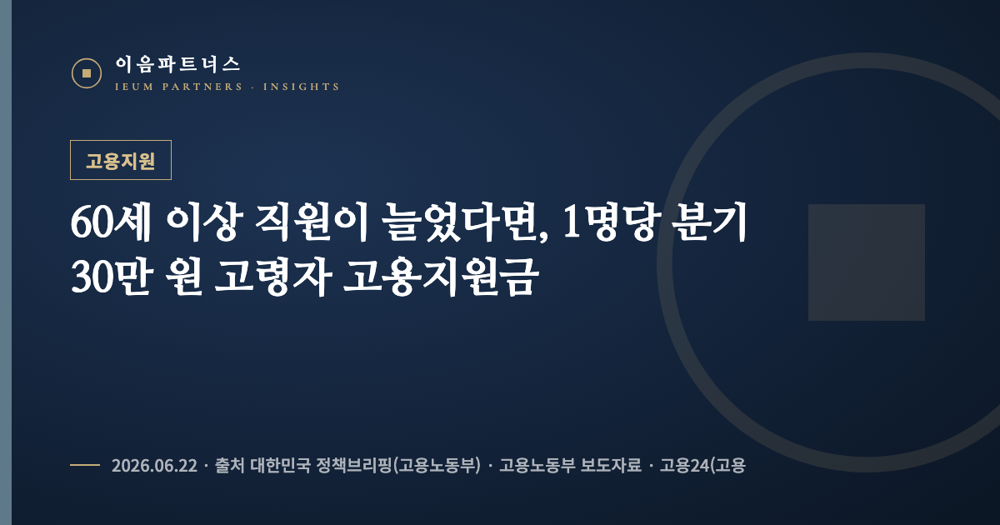

60세 이상 직원이 늘었다면, 1명당 분기 30만 원 고령자 고용지원금

정년제도가 없거나 정년 연장·재고용 같은 계속고용제도를 따로 두지 않은 회사도, 60세 이상 직원이 늘었다면 받을 수 있는 지원금이 있습니다. 고용노동부의 고령자 고용지원금입니다(고용24). 이 글에서는 이 지원금의 요건과 금액, 그리고 이름이 비슷한 계속고용장려금과 무엇이 다른지 정리합니다.
고령 직원을 새로 뽑았거나 오래 함께해 온 회사라면 해당 여부를 한 번 따져 볼 만합니다. 우리 회사 숫자로 계산해 보고 싶다면 카카오톡 채널 이음파트너스에서 함께 확인해 볼 수 있습니다.
어떤 회사가, 얼마를 받나
고령자 고용지원금은 회사가 고용한 60세 이상 근로자 수가 늘어날 때 그 비용 일부를 지원하는 제도입니다. 우선지원대상기업, 중견기업, 사회적기업 등이 대상이고 대기업과 공공기관은 빠지며, 고용보험 적용 기간이 1년 이상이어야 합니다(대한민국 정책브리핑).
| 구분 | 내용 |
|---|---|
| 지원 금액 | 늘어난 60세 이상 근로자 1명당 분기 30만 원 |
| 지원 기간 | 최대 2년(총 240만 원) |
| 판단 기준 | 신청 분기의 월평균 고령자 수가 최초 신청 직전 분기 이전 3년간 월평균보다 많아야 함 |
| 인원 한도 | 분기 월평균 피보험자 수의 30% 이내, 최대 30명(월평균 피보험자 10명 이하 기업은 3명) |
| 기업 요건 | 우선지원대상기업·중견기업·사회적기업 등, 고용보험 적용 1년 이상 |
인원 한도는 제도를 도입할 때 고용노동부가 밝힌 기준입니다(고용노동부 보도자료). 우선지원대상기업은 업종별 상시 근로자 수로 정해지므로, 우리 회사가 해당하는지는 고용센터에서 먼저 확인해 보시길 권합니다.
가장 헷갈리는 기준, ‘직전 3년 평균’
이 지원금은 60세 이상 직원이 ‘있다’고 주는 돈이 아니라, 기준보다 ‘늘었을 때’ 주는 돈입니다. 여기서 고령자는 매월 말 기준으로 고용 기간이 1년을 넘는 60세 이상 근로자를 말하고, 신청 분기 중에 고용한 근로자는 근로계약 기간이 1년을 넘어야 합니다(대한민국 정책브리핑). 원래 60세 이상 직원이 많던 회사는 숫자가 더 늘지 않으면 받기 어려울 수 있습니다.
계속고용장려금과는 무엇이 다른가
정년을 늘리거나 없애거나 정년 후 재고용한 회사에 주는 고령자 계속고용장려금은 1인당 수도권 월 30만 원, 비수도권 월 40만 원을 최대 3년 지원하는 별도 제도입니다(고용노동부). 정부는 “고령자 계속고용장려금과 고령자 고용지원금의 중복 수급은 불가능해요!”라고 안내하고 있어, 우리 회사 상황에 맞는 쪽을 골라야 합니다.
신청은 회사가 직접 하고, 지원 여부와 금액은 고용노동부(고용센터) 심사로 정해집니다. 분기별 신청 기간에 고용24나 관할 고용센터에 신청서를 내면 요건 확인을 거쳐 지급 여부가 통보됩니다.
대표님이 지금 확인할 것
- 최근 3년 동안 60세 이상 고용보험 가입 직원 수가 분기별로 어떻게 바뀌었는지 뽑아 보았는지
- 우리 회사가 우선지원대상기업이나 중견기업에 해당하는지
- 계속고용장려금과 고령자 고용지원금 가운데 어느 쪽이 맞는지 비교했는지
- 고용보험 취득·상실 신고가 빠짐없이 돼 있는지
참고한 자료
- [중장년 고용정책] ‘고령자 고용지원금’이 뭐지? — 대한민국 정책브리핑(고용노동부) (2024.06.18)
- 고령자 고용지원금이 뭐지? — 대한민국 정책브리핑(고용노동부) (2022.03.11)
- 2022년부터 “고령자 고용지원금” 제도 시행 — 고용노동부 보도자료 (2022.01.03)
- 고령자 계속고용장려금 제도 안내 — 고용24(고용노동부) (2026.11.28 확인)
- [인포그래픽] 고령자 계속고용장려금 — 고용노동부 (2026.10.06)
60세 이상 직원이 늘어난 회사라면 카카오톡 채널 이음파트너스로 편하게 물어봐 주세요.
※ 이 글은 일반적인 정보 제공을 위한 것으로, 개별 사안은 세무사·노무사 등 전문가와 함께 확인하시기 바랍니다.